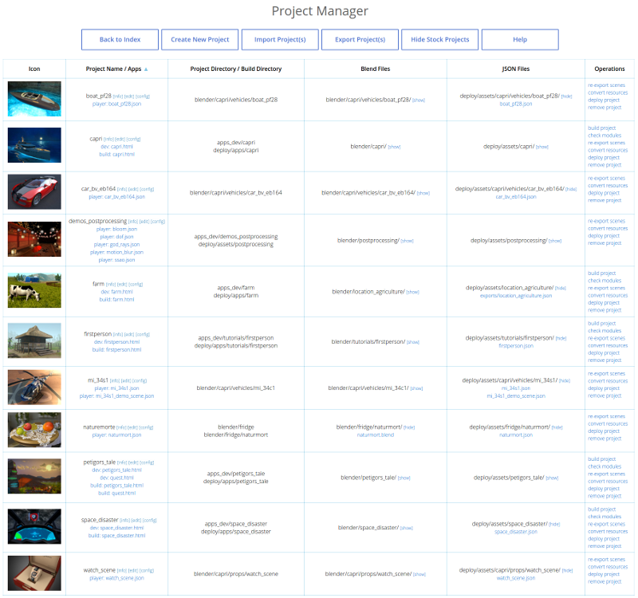
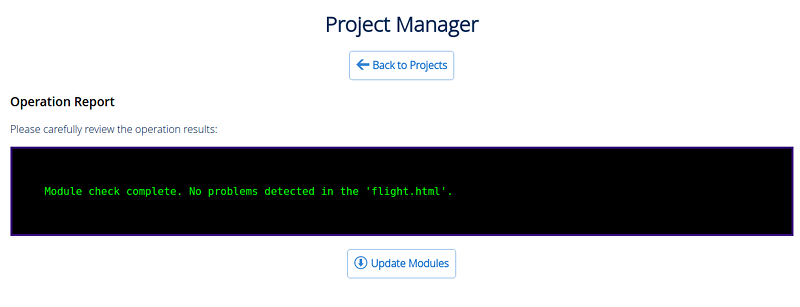
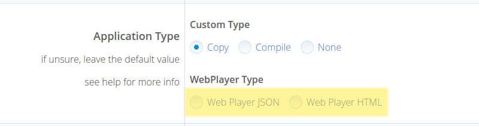
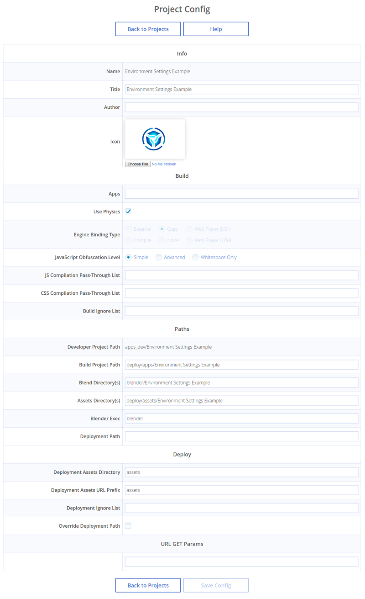

项目管理¶
目录
自版本 15.09，SDK 中包含一种项目管理功能，使它成为可能 ︰
浏览完整列表和文件结构的项目;
启动应用程序，在查看器中运行导出的场景，在Blender中打开blend文件;
创建和配置新的应用程序，包括那些基于现成的模板;
构建应用程序和并打包方便地部署在远程的服务器;
将应用程序资源 （纹理、 音频和视频文件） 转换为其他格式，以确保跨浏览器和跨平台的性能;
自动重新导出应用程序的所有场景，包括导出到 JSON 和 HTML 格式;
删除项目。
项目管理器¶
SDK的首页的 工具 项中可以运行 项目管理 应用 。启动后，该应用程序将输出 SDK 中的所有当前项目列表。
项目管理的命令位于页面的顶部。
- 返回首页
返回到 Blend4Web SDK 索引页。
- 新建工程
打开 项目创建 向导。
- 导入项目
打开 project import 对话。
- 导出项目
打开 project export 页。
- 隐藏项目
可以用来隐藏项目。如果已经隐藏了此类项目，则此命令替换
显示项目命令。- 帮助
打开 帮助文件.
用于管理特定项目的命令在它的右侧。
注解
根据项目的类型的一些命令可能无法使用。
编译项目 （WebPlayer JSON 和 WebPlayer HTML 项目不可用）。
检查是否缺少或不必要的API模块（WebPlayer JSON 和 WebPlayer HTML 项目不可用）。
激活此选项将使项目管理器检查应用程序使用的模块，并将检查结果的结果输出到控制台。可能的警告消息如下：
如果一个或多个API模块从项目的文件夹中丢失，将会显示以下信息：
模块 `module_name` 在 `project_name.html` 项目丢失，请包括它或运行 `Update Modules`.

这些缺失的模块可以被添加到项目中的
Update Modules按钮如果项目具有未在程序代码的任何地方使用的一个或多个的API模块，将显示以下信息：
在 `project_name.html` 中的 `不正确的模块 `module_name` ， 请删除它或运行 `Update Modules`.

这些不正确的模块可以从项目中用 “更新模块” 按钮删除。
在已检测缺失/不需要的模块没有任何问题的情况下，将显示以下信息：
模块检查完毕。在 `module_name.html`. 中检测到没有问题
从项目重新导出blend文件。
移除项目
更新文件结构. 仅可用于 Blend4Web 16.12 或更旧版本创建的项目。
注解
项目的所有路径都是从它的 .b4w_project 配置文件 中检索。
位于项目的名称旁边的是链接到
这里也指定应用程序类型。应用程序可以具有下列类型之一︰
- 播放器
可以使用 Web 播放器播放应用程序。
- 开发
开发中的应用。
- 构建
编译应用程序。
项目创建向导¶
该工具用于创建新的项目是列入项目管理应用程序中，由主页面上 [Create New Project] 按钮执行。
[Back to Projects] 按钮可以用来返回到项目管理的主页面，而 [Help] 按钮可以用到访问 帮助文件.
项目名称习惯为 “projects/project_name”, “projects/project_name/assets”, “projects/project_name/blender” 和 “projects/project_name/build” 等名称的项目目录。
在浏览器中所示的项目标题。
项目作者的名字。
添加应用程序模板。标准应用程序模板 ︰ html 文件，css 文件，js 文件将添加到项目目录 “projects/project_name”.
添加场景模板。标准的 json 文件将添加到 “projects/project_name/assets” 目录;blend文件将添加到 “projects/project_name/blender” 目录。
使用材质库。材质库的Blend文件会复制到项目文件夹 “projects/project_name/blender”，资产文件复制到 “projects/project_name/assets” 目录。
复制项目管理脚本。Project.py 脚本将复制到项目目录。
项目的类型。有几个选项 ︰
Copy- 引擎文件将直接从deploy/apps/common/目录复制到应用文件夹。当项目展开时，唯一的应用程序文件进行编译，而引擎文件仍保持不变（所以你不能修改引擎本身）;
Compile-引擎源代码应用程序的脚本一同编译;这个选项可以用于修改引擎本身的代码;
None-项目管理器不会将引擎文件复制到应用程序文件夹，也不将它执行任何操作生成应用程序。应用程序开发人员将不得不手动执行他们所需要的一切;Web Player JSON- 项目下的 json 文件通过SDK里的web播放器播放；Web Player HTML- 项目被打包到单独的 html 文件，包含所有所需的资源。
Javascript 优化级别。
“简单” — — 变量的名称替换代码;
“先进” — — 进行了代码优化;
“只空格” — — 只有空格从代码中移除。
网络播放器的URL属性。此选项卡仅当
Engine Binding Type参数设置为Web Player JSON活Web Player HTML时可用。“显示FPS” 用于显示在玩家的右上角的FPS计数器。
“自动旋转摄像头” 让场景加载后立即自动旋转相机。
“禁用社交网络按钮” 禁用控制面板上的社交网络按钮。
“背景透明” 启用渲染区域的透明度。
“使用压缩纹理” 使精缩和压缩纹理加载（以DDS格式）。
创建一个 Web 播放器应用程序¶
网络播放器应用的主要优点是易于在网站上部署这种应用。
创建一个Web Player应用程序很简单。所有你需要做的，当创建一个新的项目选择时在引擎绑定类型面板下面选择 Web Player JSON 或 Web Player HTML 选项。
可用于在Web播放器项目的参数大多是和任何其他类型的项目一样的。唯一的例外是被称为网络播放器PARAMS组参数。
项目信息¶
此页包含有关选定项目的信息，可以在该项目的标题旁边的 [info] 链接查看。
项目参数¶
- 项目名称
项目名称
- 项目的标题。
在浏览器中所示的项目标题。
- 项目作者 / 公司
该项目的作者或开发商公司的名称。
- 项目图标
该项目的图标。
- 应用程序
项目应用程序。
- 引擎绑定类型
设置项目类型
- 项目路径 （开发目录）
项目的目录。
- 项目配置
项目的配置文件。
- 构建目录
项目构建目录。
- Blend 目录
项目的blend文件目录的位置。
- 资产目录
项目的媒体资产所在的位置目录。
- URL 参数
URL 参数 列表用来启动应用程序。
- JavaScript 混淆级别
Javascript 优化级别。
- JS编译通过列表
该项目的JavaScript文件汇编直通例外列表。
- CSS编译通过列表
该项目的样式表编译直通例外列表。
- 构建忽略列表
项目编译中的例外列表。
- 部署资产目录
资产将被放置部署项目的目录。
- 部署资产URL前缀
get_assets_path() 所报告的资产目录部署项目中URL路径前缀。
- 部署忽略列表
项目的部署例外列表。
项目编辑¶
简单的基于Web的界面可以编辑项目文件，通过项目的标题旁的 [编辑] 链接。

编辑器窗口的左的部分包含所有从项目目录(projects/my_project) 中 .html, .css 和 .js 文件的列表。右侧部分包含带有高亮语法的当前选定的项目文件 （默认无选中的文件） 的内容。
注解
这个界面可以仅用于编辑项目的开发版文件，但不能编辑建建好的版本。
新的 .html, .js 和 .css 文件可以通过单击 [New File] 按钮添加到项目目录。
可在页面底部找到了 [Save] 和 [Save As...] 按钮用来保存当前选定的项目文件。
项目配置¶
这是一个 web 界面，允许开发人员在创建项目后查看和更改项目设置。
此页面包括项目创建过程中的所有设置以及一些额外的参数。一些参数是只读 （因此创建项目后不能更改）。
Info 设置组¶
- 名字
项目名称
这是一个只读的参数。
- 名称
在浏览器中所示的项目标题。
- 作者
该项目的作者或开发商公司的名称。
- 图标
该项目在项目管理器中的图标。
其图标可以替换的选择文件按钮。如果图标不指定 （因为它是默认情况），则使用 Blend4Web 标志。
Build 设置组¶
- Apps
项目中用于编译应用程序的
.HTML文件。每个.HTML文件被认为是一个单独的应用程序。- 使用物理
启用和禁用添加物理引擎文件到该项目。如果该项目不使用物理可以关闭。
此参数在 WebPlayer HTML 类型项目中总是禁用但 WebPlayer JSON 类型中总是启用。对于其他类型的项目，它可以手动设置。
- 应用程序类型
设置项目类型
这是一个只读的参数，因为不同类型的项目有不同的内部结构。
- JavaScript 混淆级别
编译应用程序时 Javascript 优化级别。
此参数为 None，WebPlayer HTML 和 WebPlayer JSON 类型项目设置为只读模式。
- JS编译通过列表
该项目的JavaScript文件汇编直通例外列表。
- CSS编译通过列表
项目的 CSS 文件直通例外列表。
- 构建忽略列表
项目编译中的例外列表。
Paths 设置组¶
- Developer Project Path
开发的应用程序的路径。
这是一个只读的参数。
- Build Project Path
编译应用程序的路径。
- Blend 目录
blend 文件夹的路径
- 资产目录
资产文件夹的路径。
- Blender Exec
Blender的可执行文件路径。
- Deployment Path
为项目最终部署文件夹的路径。
Deploy 设置组¶
- 部署资产目录
资产将被放置部署项目的目录。
- 部署资产URL前缀
get_assets_path() 所报告的资产目录部署项目中URL路径前缀。
- 部署忽略列表
项目的部署例外列表。
- Override Deployment Path
删除部署目录，如果它已经存在。
项目导出¶
项目输出窗口可以通过 [Export Project(s)] 链接访问。

{kind=link}
{kind=link}
{kind=link}
{kind=link}
{kind=link}
{kind=link}
命令¶
- 回到项目
返回到项目管理的主页面。
- 隐藏项目
隐藏项目。如果已经隐藏了此类项目，则此命令替换为
[显示项目]命令。- 帮助
显示帮助页。
- 导出项目
可以用来导出所选的项目。
项目参数¶
- 选择
显示项目是不是选择了要导出。
- 名字
该项目的目录的名称。
- 名称
项目的标题。
- 作者
项目作者的名字。
- 档案名称
导出的项目打包的档案名称。
部署项目¶
您完成您的项目后，在项目管理器的主页面从 Operations 面板选择 deploy project 选项。该项目将被导出，打包成一个单一的存档，并下载到您的网页浏览器存储所有下载文件的文件夹。

在那之后，该存档文件然后可以下载的到您的 web 浏览器存储下载的所有文件按下载按钮的位置的文件夹。应该指出的是，下载的过程可以产生大量的时间取决于归档文件的大小。
若要将项目放在网页上，你必须提取此文档，并用FTP，SSH或由支持的任何其他协议服务上传文件（html 文件和 assets 目录）发送到Web服务器。
注解
将项目文件上传到Web服务器上，应保留对其文件的归档和相关路径的内部结构。
一个Web播放器的HTML应用程序然后可以使用一个 iframe 容器放置在任何网页。下面是可以用于此的HTML代码的示例：
<!DOCTYPE html>
<html>
<head>
<title>An Example Application</title>
</head>
<body>
<iframe width="800" height="500" allowfullscreen src="/projects/myproject/myproject.html"></iframe>
</body>
</html>
部署JSON项目也是同样地进行，但不是一个HTML文件，它是使用的Web应用程序播放器，并包含实际场景中的JSON文件的组合。
<!DOCTYPE html>
<html>
<head>
<title>Another Example Application</title>
</head>
<body>
<iframe width="800" height="500" allowfullscreen src="/myproject/webplayer.html?load=/projects/myproject/myproject.json&show_fps"></iframe>
</body>
</html>
高级项目管理¶
高级项目管理器由经验丰富的开发人员使用，在需要更多的灵活性和需要自动化项目开发过程中使用。
高级项目管理器使用 project.py 脚本并手动编辑 .b4w_project 配置文件。
Project.py 脚本可以在 Blend4Web SDK 目录的 ./apps_dev/ 文件夹中找到。如果在创建项目时，设置了 Copy Project Management Script 选项，也可以在项目的根文件夹中找到该脚本。
依赖¶
项目管理系统在所有操作系统都可用。但是，某些操作可能需要安装附加依赖项。为了检查是否满足所有依赖项，请使用以下命令 ︰
./project.py check_deps
对于MS Windows用户：
python project.py check_deps
对于脚本运行它需要安装Java和 设置PATH系统变量.
注解
Java 是默认包含在 Windows 版本的 SDK。在 Linux 和 macOS 它应该手动安装。
Resource Converter 也使用其自己的描述的外部工具集，在 另外章节 描述.
项目结构¶
这是放置在 / projects 目录中的SDK文件夹的根目录下的一个项目名为MY_PROJECT结构以及，看上去的样子：
blend4web/
projects/
my_project/
assets/
my_project.json
my_project.bin
blender/
my_project.blend
build/
my_project.html
my_project.min.css
my_project.min.js
.b4w_project
my_project.js
my_project.css
my_project.html
这个应用程序包括3个不同的目录。
my_project/assets。 包含媒体文件（纹理和声音，还有
.bin和.json文件）项目的场景。my_project/blender. 包含项目的场景的
.blend文件。my_project/build. 包含构建应用程序的文件。
项目的主文件 .b4w_project，还有 .js，.html 和 .css 文件，放置在 my_project/ 文件夹的根下。
此外，部署命令可以创建另一个目录中，但它通常放置在 SDK 之外，其名称和路径取决于目标服务器上的目录结构。
注解
从版本16.12开始，项目结构已经改变。仍然使用旧的结构的项目还可以工作，而应该被视为过时。我们建议使用 update file structure 按钮，这些项目的结构升级到一个新的文档结构。
这个按钮可以在 Operations 面板在项目管理器列表中的项目条目的右侧找到。它仅适用于使用淘汰的项目结构用户项目（不是stock类型）。
项目配置文件（.b4w_project）¶
项目配置文件包含项目的所有必要的信息，包括姓名，元数据，目录，应用程序创建和部署信息。
项目配置文件可以手动编辑，但一个更方便的方法是使用 项目编辑 界面。
[info]
author = Blend4Web
name = my_project
title = MyProject
icon =
[paths]
assets_dirs = projects/my_project/assets;
blend_dirs = projects/my_project/blender;
blender_exec = blender
build_dir = projects/my_project/build
deploy_dir =
[compile]
apps =
css_ignore =
engine_type = external
ignore =
js_ignore =
optimization = simple
use_physics =
[deploy]
assets_path_dest = assets
assets_path_prefix = assets
ignore =
override =
这是一个标准的INI配置文件，其中包含的部分，属性和值。
模块 [paths]¶
包含项目路径：
- 资源目录
项目的媒体资产所在的位置目录。
- blend_dirs
项目的blend文件目录的位置。
- blender_exec
Blender的可执行文件路径。
- build_dir
项目构建目录。
- deploy_dir
项目部署的目录。
模块 [compile]¶
- apps
项目应用程序。
- css_ignore
该项目的样式表编译直通例外列表。
- engine_type
设置项目类型
- ignore
项目编译中的例外列表。
- js_ignore
该项目的JavaScript文件汇编直通例外列表。
- 优化
Javascript 优化级别。
- use_physics
指示您的项目是否使用物理或没有。默认 - 使用物理。
- use_smaa_textures
指示您的项目是否使用SMAA纹理与否。当前未使用。
- version
项目版本。
模块 [deploy]¶
- assets_path_dest
资产将被放置部署项目的目录。
- assets_path_prefix
get_assets_path() 所报告的资产目录部署项目中URL路径前缀。
- ignore
项目的部署例外列表。
- override
在部署阶段替换现有的输出目录。请谨慎使用。
创建项目¶
./project.py init my_project
此命令将创建在当前目录指定名称的项目。默认情况下，项目目录只包括一个配置文件。
可用参数：
-A | --copy-APP-templates（可选）创建项目目录的标准应用模板 (my_project_dev.html, my_project.js, my_project.css).-C | --author（可选）写作者的还是公司的配置文件名。-o | --optimization（可选）写在配置文件中的脚本优化级别。-P | --copy项目-script（可选）在项目目录中创建 project.py 脚本的副本。-S | --copy-场景templates（可选）创建目录deploy/assets/<my_project_name>和blender/<my_project_name>(my_project.json/.bin 和 my_project.blend 相应的).-T | --title``（可选）在配置文件写入标题。编译时，会将写入进HTML元素 ``<title>。-t | --engine-type（可选）在配置文件中写入引擎类型。
示例：
./project.py init -AS -C Blend4Web -o simple -T MyProject -t external my_project
这个命令将创建一个名为 my_project 目录，这里面以下文件将被放置：my_project.js, my_project.css, my_project_dev.html 和 .b4w_project.
该 .b4w_project 文件看起来像:
[info]
author = Blend4Web
name = my_project
title = MyProject
icon =
[paths]
assets_dirs = projects/my_project/assets;
blend_dirs = projects/my_project/blender;
blender_exec = blender
build_dir = projects/my_project/build
deploy_dir =
[compile]
apps =
css_ignore =
engine_type = external
ignore =
js_ignore =
optimization = simple
use_physics =
use_smaa_textures =
version =
[deploy]
assets_path_dest = assets
assets_path_prefix = assets
ignore =
override =
开发一个项目中的多个应用程序¶
一个项目可以包含多个应用程序。这可以通过用分号分隔的配置文件列表对应的HTML文件的形式提供:
...
[compile]
apps = myapp1;myapp2;
...
如果 apps 字段为空，项目目录中的每个 html 文件将被视为一个应用程序。
构建项目¶
python3 project.py -p my_project compile
构建在 projects/my_project/build 目录中的项目。
可用参数：
“-a | --app”（可选）指定一个HTML文件，相对于该项目的应用程序将建成。"-c | --css-ignore"（可选）添加CSS样式异常为了不编译它们。"-j | --js-ignore"（可选）添加脚本例外为了不编译它们。“-o | --optimization”（可选）指定JavaScript文件的优化级别：whitespace，simple（默认）或advanced。“-v | --version”加版本和脚本和样式的路径。
编译器要求
一个HTML文件必须存放在目录的根目录，如果
-a选项被禁用脚本和样式可以存储在应用程序的根目录和子文件夹中
自动 Blend 文件导出¶
python3 project.py -p my_project reexport
此命令将重新导出混合在 JSON 和 HTML 格式的文件。
可用参数：
“-b | --blender_exec”Blender可执行文件的路径。"-s | --assets"用场景资源指定目录。
资源转换¶
python3 project.py -p my_project convert_resources
外部资源（纹理，音频和视频文件）转换为另一种格式，以确保跨浏览器和跨平台性能。
可用参数：
"-s | --assets"用场景资源指定目录。
资源的转换中详细描述在 对应部分.
部署项目¶
python3 project.py -p my_project deploy DIRECTORY
与所有依赖一起保存了一个项目在外部目录。
可用参数：
"-e | --assets-dest"资产目的地目录（“资产” 默认情况下）。"-E | --assets-prefix"资产网址前缀（默认情况下“资产”）。"-o | --override"如果它存在删除目录。"-s | --assets"用场景资源指定目录。"-t | --engine-type"（可选）写在配置文件中的引擎类型。
应用程序升级新版本的SDK¶
当升级新的SDK版本往往两个问题就出来了：
引擎的新和旧版本的模块不匹配。
旧的和新的引擎API不匹配。
为了更新应用程序的开发者版本导入模块列表转到项目源代码目录 apps_dev/my_project 和执行模块列表生成脚本：
python3 ../../scripts/mod_list.py
对于MS Windows用户：
python ..\..\scripts\mod_list.py
注解
要运行的Python 3.x的需要安装在你的系统中的脚本。
控制台将打印模块列表 - 将它们复制并粘贴到主HTML文件：
<head>
<meta charset="UTF-8">
<meta name="viewport" content="width=device-width, initial-scale=1, maximum-scale=1">
<script type="text/javascript" src="../../src/b4w.js"></script>
<script type="text/javascript" src="../../src/anchors.js"></script>
<script type="text/javascript" src="../../src/animation.js"></script>
<script type="text/javascript" src="../../src/assets.js"></script>
<script type="text/javascript" src="../../src/batch.js"></script>
<script type="text/javascript" src="../../src/boundings.js"></script>
<script type="text/javascript" src="../../src/camera.js"></script>
. . .
</head>
为了消除 API 不兼容性可能需要重构您的应用程序。所有的改变放在了 发行说明.